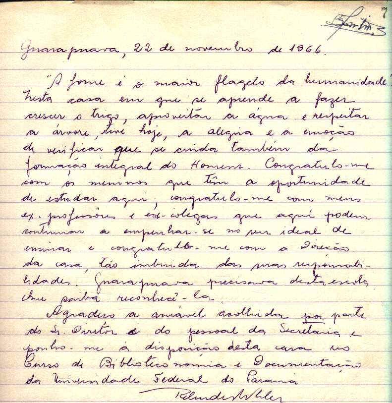

LIVRO DE VISITAS
Página - 07

A citação pintada(em 2002) no muro de entrada do Colégio foi retirada desse depoimento, deixado por RELINDES KHOLER.
Alegra-nos saber que em 1966 nosso estabelecimento já tinha como objetivo a ecologia(conceito que aparece no texto), bem antes que a mesma virasse uma das maiores questões mundiais.
